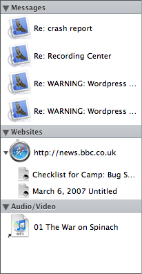

Resource Management
Resource Management
Linking and Copying
When you drop a file or other media into an entry's text, Journler's action depends on the file type, its associations and the options you have set in media preferences. You may force Journler to copy or link on a per file basis using the standard keyboard modifiers Control for a link and Option for a copy.The default action for all file types creates a link. Journler adds an alias of the file to your entry and then links to the alias inside your entry. Journler uses an alias because is automatically tracks the location of the original file. If you move the original, Journler will still be able to find it when you click on the corresponding link.*
Journler can also copy files into your journal. Copying produces a duplicate of the file inside your entry and links to that duplicate. The original file is no longer of significance to Journler. Once a file is added to an entry in this manner, it stays with the entry until you explicity delete it. In previous versions of Journler it was enough to remove the link from the text. It is now necessary to delete the file or media from the Resource Pane.

The Resource Pane
Quickly see which files and folders you've added to an entry with the resource pane. The browser lists every resource associated with an entry, indicating if they are aliases or original files. From within the resource browser select a file to get more information about it or, if Journler supports that type of file, view it. The button at the bottom right of the window hides and closes the resource list while the Resource Worktool button next to it give you a number of ways to work with your media.Tip: Select more than one entry to see all of the resources associated with them.
One Resource Many Entries
As you add media to entries you may end up adding the same media to various entries without knowing it. For example, you might refer to the same web site or same person in entries that are years apart. When you do this Journler prevents a duplication from occurring, electing instead to share the resource that represents that particular media. The resource then knows that it is shared by more than one entry and depicts that relationships in the Resource Pane.An example may be seen at the left with the BBC website. The same website has been referred to from two entries. Journler shares the resource for this website and notes the connection in the resource list. This is a potentially very powerful feature. Suddenly you are able to see connections between entries that you never knew existed. You may have forgotten that you added a particular contact or web page to an earlier entry, but Journler does not. Differences of years and subjects are immediately bridged as the shared resources link the entries that contain them.
Containing Folders & Journler Links
The resource pane also shows which folders contain the currently selected entries as well as the other entries that are linked to them. It's quick way to see the explicit relationships you have established in your journal. If, however, you would prefer that this information is not displayed, you may hide it. From the Folder Worktool button at the bottom right of the window, choose Categories and Order and uncheck the first two items. From here you may also decided how resources are grouped and organized.
Including attached media in searches
By default Journler includes attached files in its searches. Other media, including Address Book contacts and Mail messages are also included in searches. Folders are not, however, included in searches. Journler indexes none of their contents. You may enable and disable searching on a per resource basis using the Folder Worktool button at the bottom right of the window. You may also modify a global search setting in Journler's media preferences. Please note that smart folders do not currently check their conditions against an entry's attached resources.
A Word on Aliases
Rather than the actual file itself, an alias is a way of linking to a file. It points to it. An alias has a certain freedom while remaining bound to the file with which it is associated. Move the original file, and the alias knows where it is. Move the alias, and it will still point to the original file. The principle also applies to aliased folders.* Aliases are not preserved across volumes. If you move your journal to another disk, there is a risk that the aliases will lose their connections. 2.5.2 also stores the relative file path to prevent this from occuring. If Journler cannot find a file, selecting it will give you the option of re-locating it. In addition, 2.5.3 attempts to locate missing files intelligently, even if the alias no longer works and the original has been moved from it previous location.